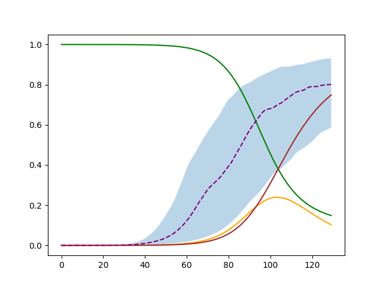
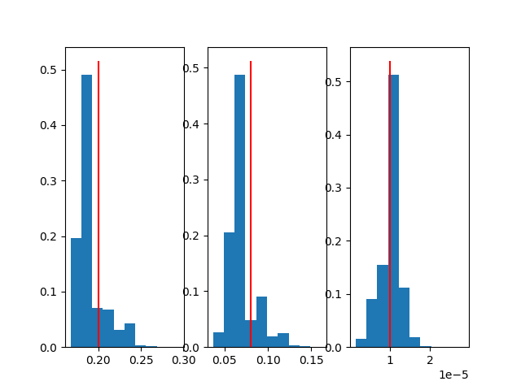
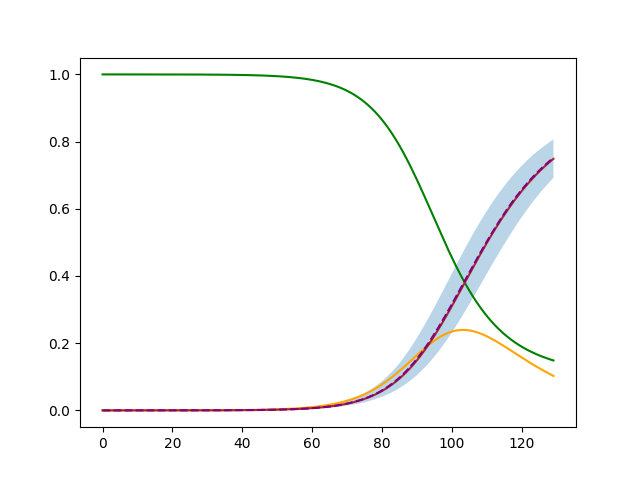
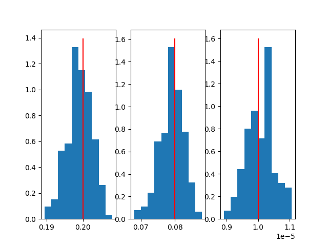

SIR
For a more in-depth example check the Jupiter notebook with the same name, or check out https://github.com/QuanticPony/compartmental/blob/master/examples/sir.ipynb
\[
\begin{align}
\nonumber \dot{S} &= -\beta \langle k \rangle \frac{I}{N}S. \\
\nonumber \dot{I} &= \beta \langle k \rangle \frac{I}{N}S - \mu I. \\
\nonumber \dot{R} &= \mu I.
\end{align}
\]
sir_model = {
"simulation": {
"n_simulations": 100000,
"n_executions": 1,
"n_steps": 130
},
"compartiments": {
"S": {
"initial_value": 1,
"minus_compartiments": "I"
},
"I": {
"initial_value": "Io",
},
"R": { "initial_value": 0 },
},
"params": {
"betta": {
"min": 0.1,
"max": 0.4
},
"mu": {
"min": 0.01,
"max": 0.2
},
"Io": {
"min": 1e-6,
"max": 1e-4
}
},
"fixed_params": {
"K_mean": 1
},
"reference": {
"compartiments" : ["R"]
},
"results": {
"save_percentage": 0.1
}
}
Now we need to define the evolution function of the system and assign it to the model:
import compartmental as gcm
gcm.use_numpy()
SirModel = gcm.GenericModel(sir_model)
def evolve(m, *args, **kargs):
p_infected = m.betta * m.K_mean * m.I
m.R += m.mu * m.I
m.I += m.S * p_infected - m.I * m.mu
m.S -= m.S * p_infected
SirModel.evolve = evolve
Once the model is defined and the evolution function is set we can create a trajectory of the model. We can set specific values for the random parameters as follows:
sample, sample_params = gcm.util.get_model_sample_trajectory(SirModel, **{"betta":0.2, "mu":0.08, "Io": 1e-5})
Now we apply the automatic adjustment of the model. Keep in mind it will only work if the initial ranges of the params are set close to the optimal values.
for i in range(7):
SirModel.run(sample[SirModel.compartiment_name_to_index["R"]], f"sir_temp{i}.data")
results = gcm.util.load_parameters(f"sir_temp{i}.data")
gcm.util.auto_adjust_model_params(SirModel, results)
Finally we run the model once again to get the final photo:
SirModel.run(sample[SirModel.compartiment_name_to_index["R"]], "sir.data")
results = gcm.util.load_parameters("sir.data")
Not adjusted |
 |  |
With automatic adjustment |
 |  |
Code used for the plots:
weights = numpy.exp(-results[0]/numpy.min(results[0]))
percentiles = gcm.util.get_percentiles_from_results(SirModel, results, 30, 70)
try:
# In case cupy is used
percentiles = percentiles.get()
sample = sample.get()
weights = weights.get()
results = results.get()
sample_params = sample_params.get()
except AttributeError:
pass
plt.figure()
plt.fill_between(numpy.arange(percentiles.shape[2]), percentiles[0,0], percentiles[0,2], alpha=0.3)
plt.plot(sample[SirModel.compartiment_name_to_index["S"]], 'green')
plt.plot(sample[SirModel.compartiment_name_to_index["I"]], 'orange')
plt.plot(sample[SirModel.compartiment_name_to_index["R"]], 'brown')
plt.plot(numpy.arange(percentiles.shape[2]), percentiles[0,1], '--', color='purple')
fig, *axes = plt.subplots(1, len(results)-1)
for i, ax in enumerate(axes[0], 1):
ax.hist(results[i], weights=weights)
ax.vlines(sample_params[i-1], *ax.get_ylim(), 'red')
plt.show()